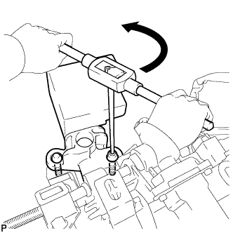
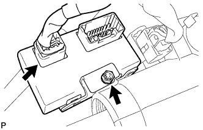

РУЛЕВАЯ КОЛОНКА В СБОРЕ (для моделей с наклонной телескопической рулевой колонкой с электроприводом) > РАЗБОРКА |
| 1. СНИМИТЕ ПРИВОД БЛОКИРОВКИ РУЛЕВОГО УПРАВЛЕНИЯ В СБОРЕ |
С помощью кернера отметьте центры 2 болтов с коническими головками.
Используя дрель со сверлом 3–4 мм (0,118–0,157 дюйма), просверлите отверстия в 2 болтах.
|  |
С помощью винтового съемника выверните 2 болта и снимите привод блокировки рулевого управления в сборе с рулевой колонки в сборе.
| 2. СНИМИТЕ МУЛЬТИПЛЕКСНЫЙ ЭБУ РЕГУЛИРОВКИ НАКЛОНА И ТЕЛЕСКОПИЧЕСКОГО ИЗМЕНЕНИЯ ВЫСОТЫ |
|  |
Отсоедините разъем.
Отверните болт и снимите ЭБУ.